Here's some drawings I made with pencil and paper for Architecture! Each week we had different architecture elements to focus on. The first few weeks focused on drawing straight lines without a ruler, so there are a lot of line drawings where I practiced that. We eventually moved on to drawing real world objects and making them look realistic. The wood blocks were the most difficult part of that unit because there are so many differing lines in each block. These exercises helped trained me to be more precise.
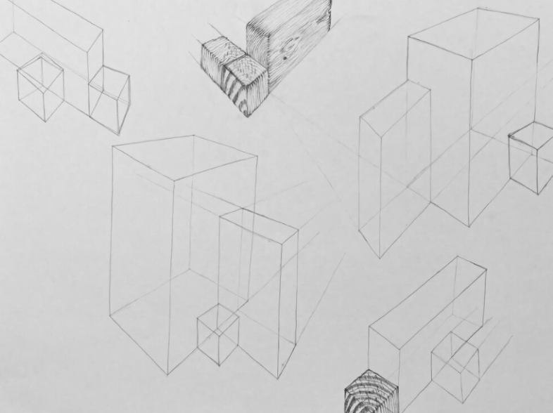 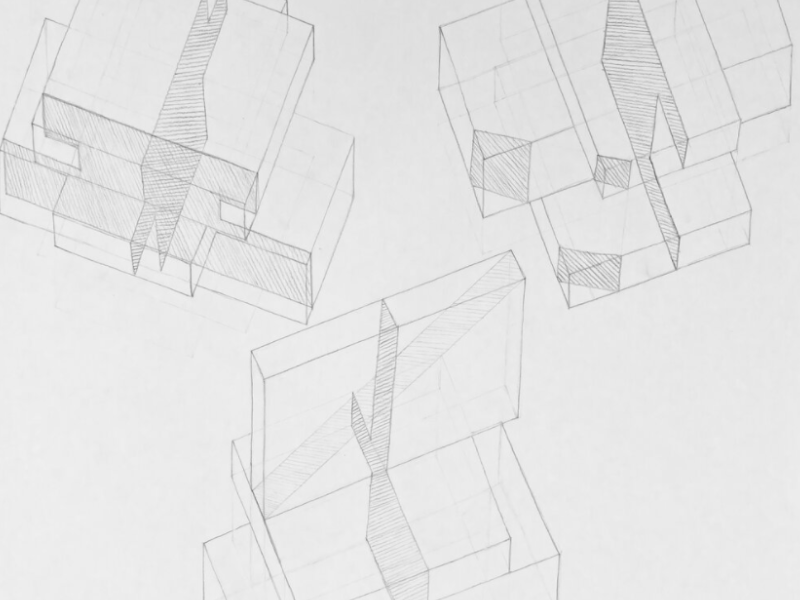 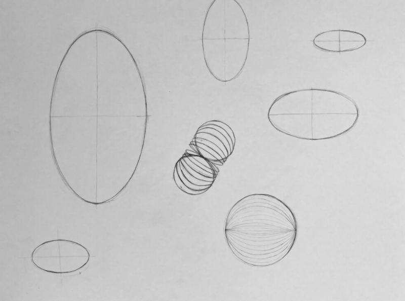 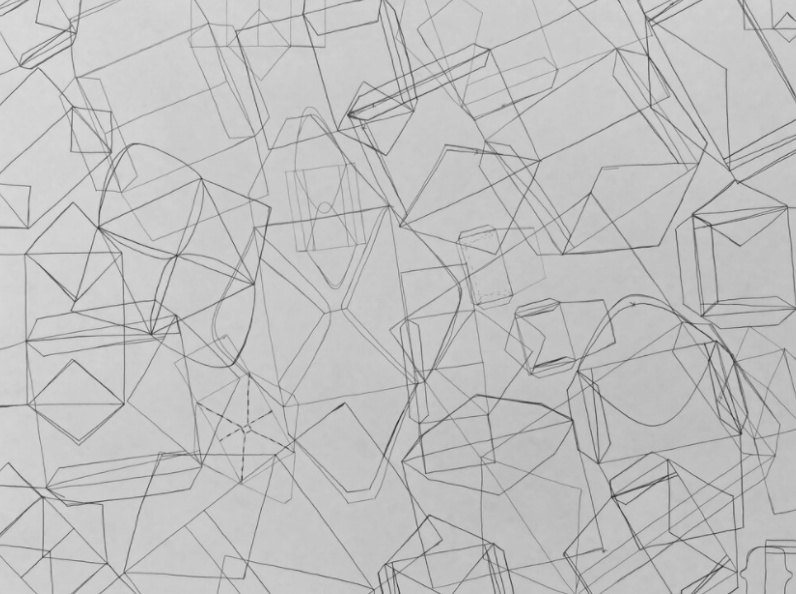 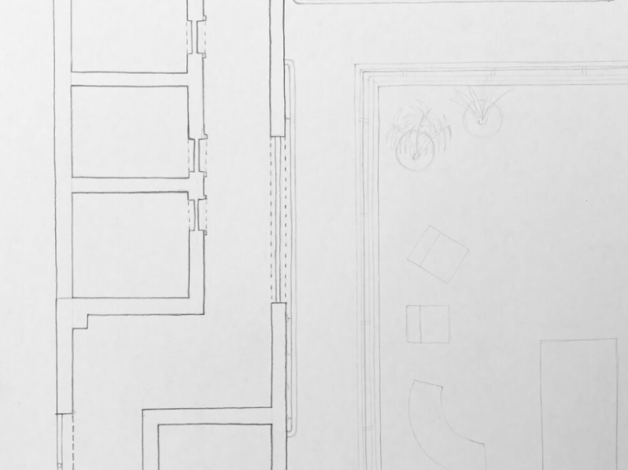 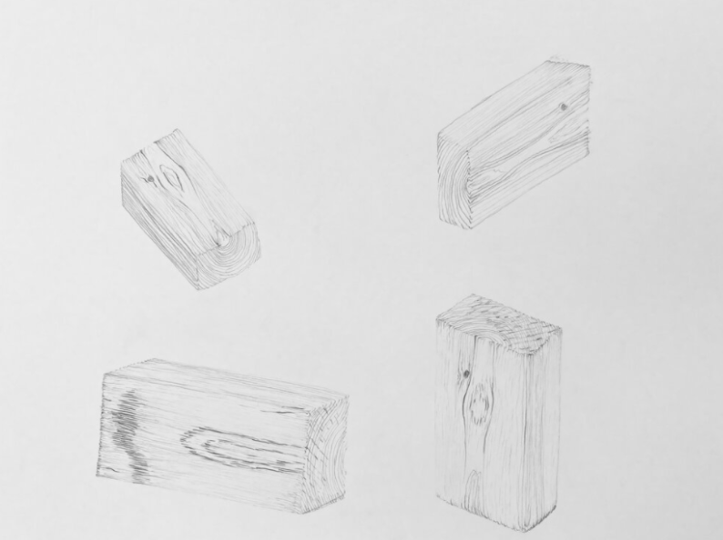 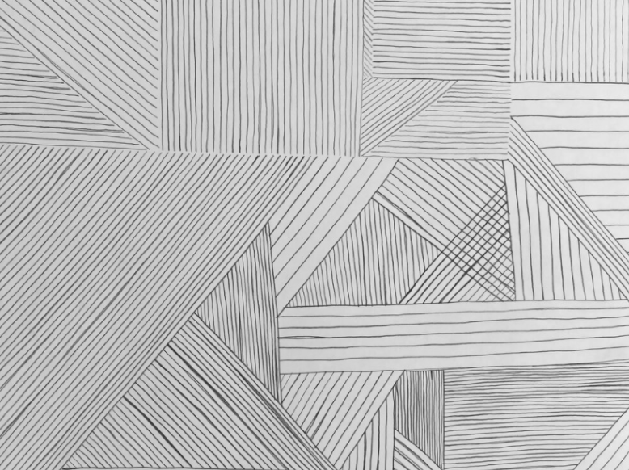 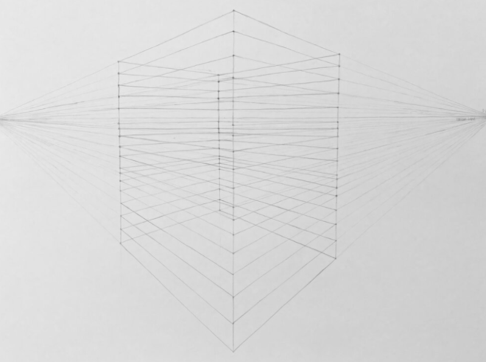 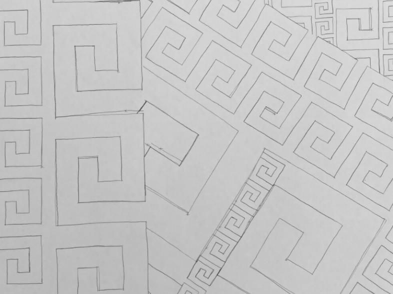 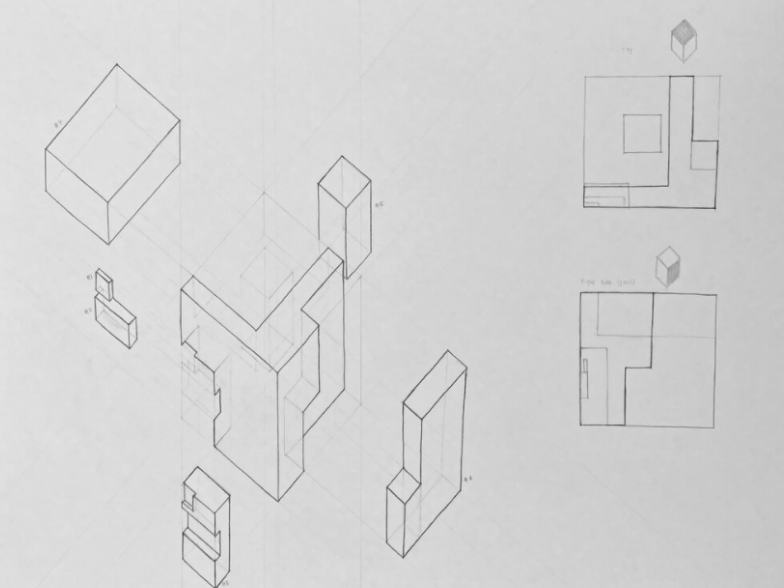 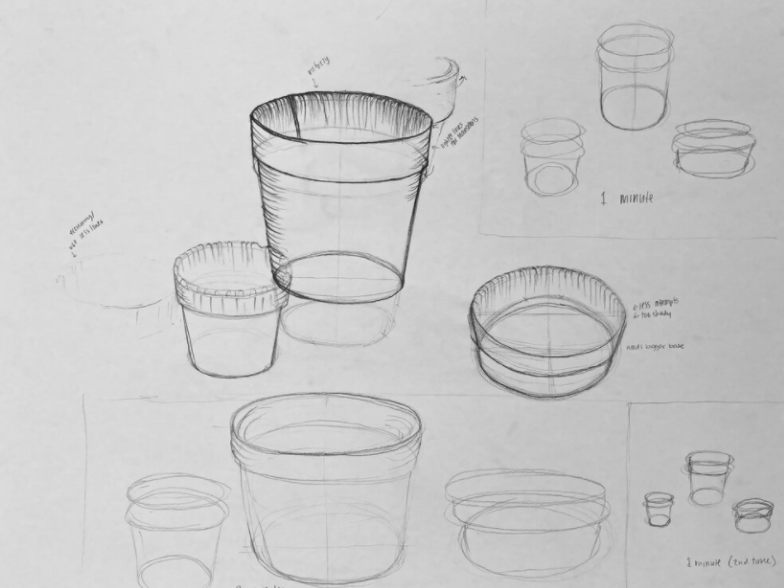 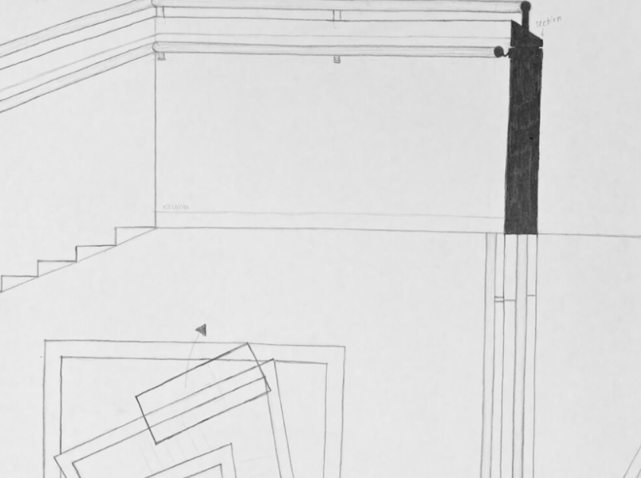 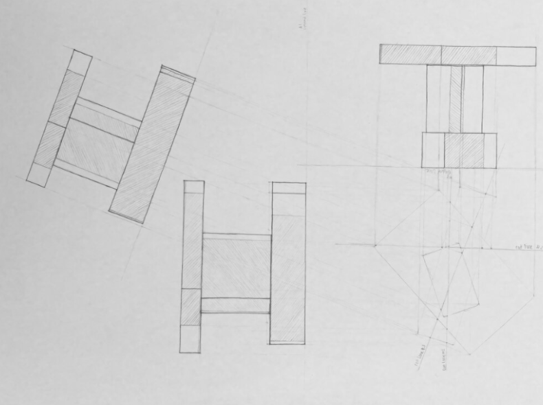 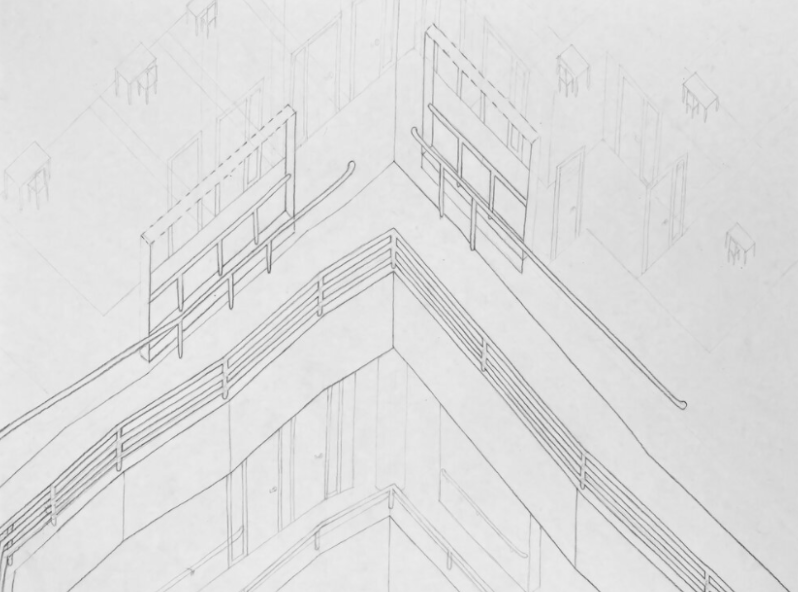 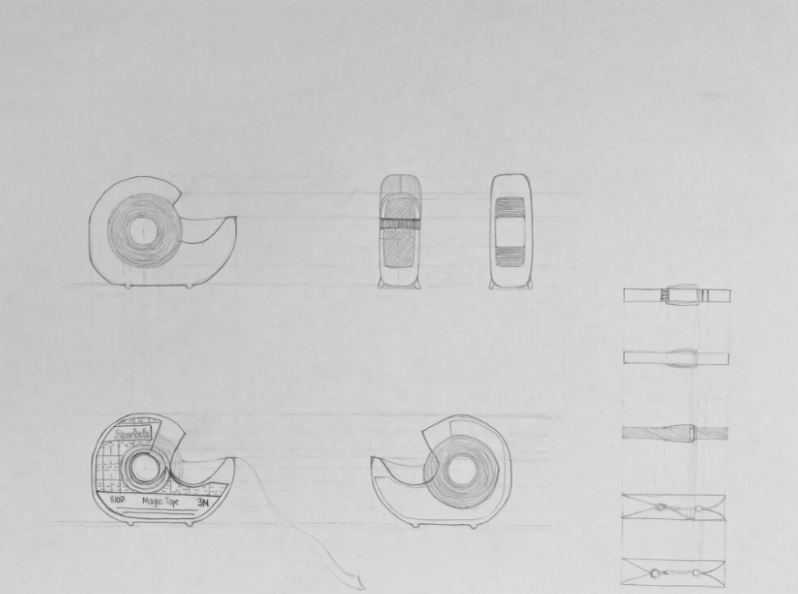 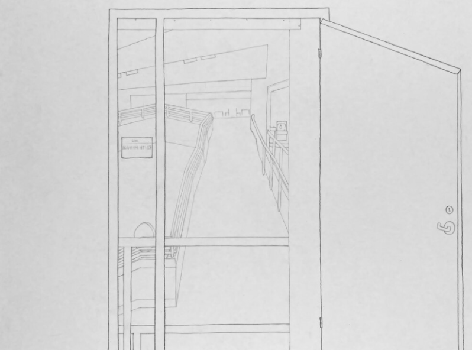 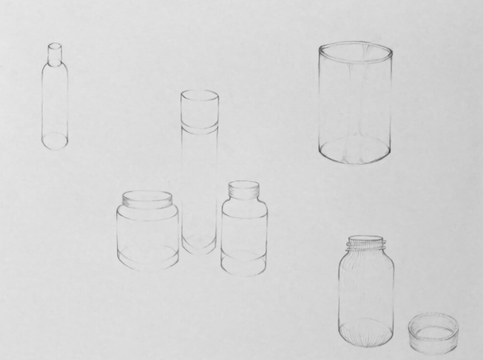 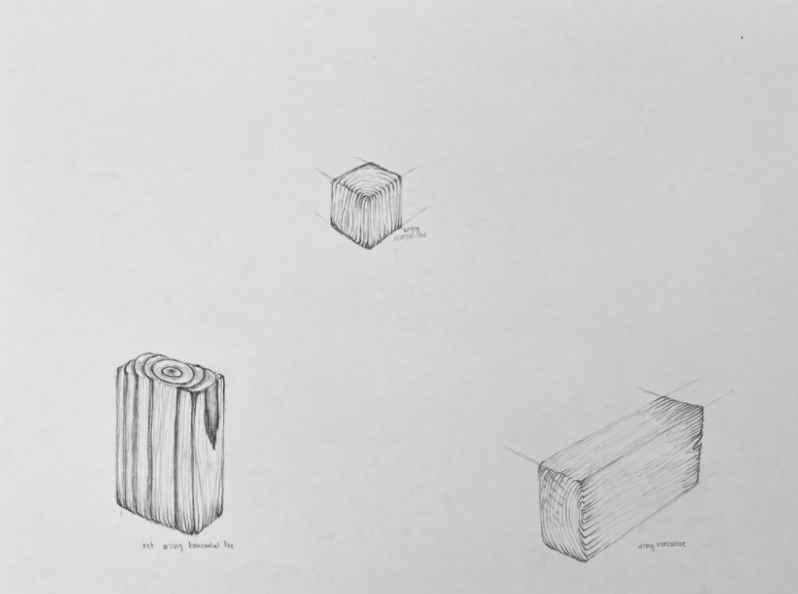This class advanced my understanding of what it is like to have a precise line and focus onevery detail. Through drawing real life small objects to drawing a large building, it took a lot of spatial awareness.